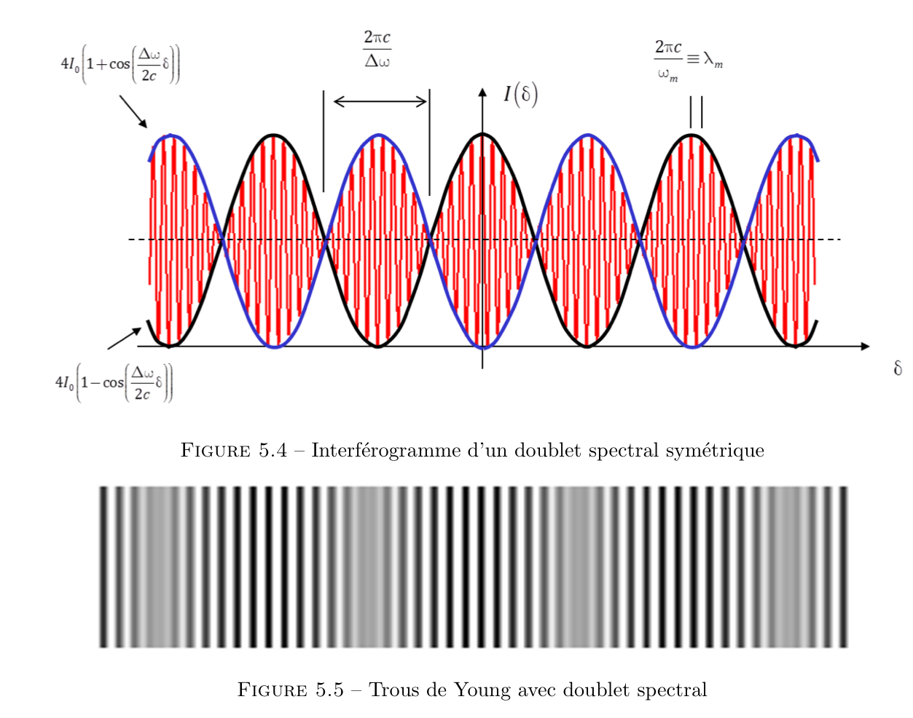
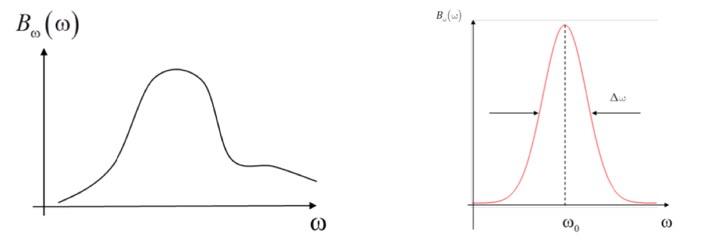
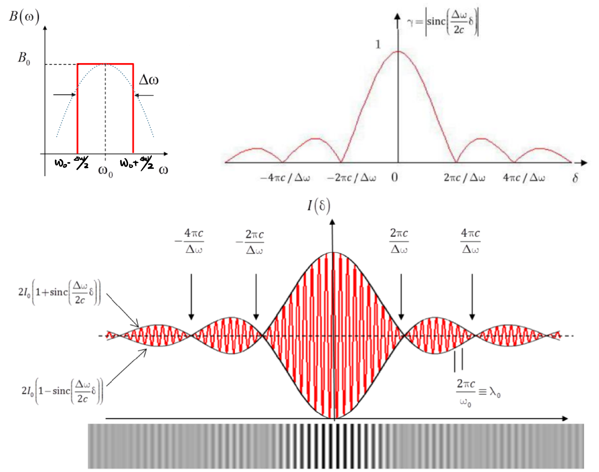

Ondes Ondulatoires
Interférences - Spectrosocopie
Sources à spectre discret
-
Une source à spectre discret est considérée comme la superpostion d'un ensemble discret de sources parfaitement monochromatiques.
-
Une source monochromatique :
-
Doublet spectral :

Preuve :
-
Contrast :
Preuve :
-
Sources réelles à spectre continue
-
La puissance émise par la source dans \([\omega , \omega +\mathrm{d}\omega]\), avec \(\mathrm d\omega >0\) est : où \(B_\omega\) est appelée la densité spectrale de puissance.
- La spectrométrie est une science à déterminer \(B_\omega\).
-
La fonction \(B_\omega(\omega)\) est nulle partout sauf dans un intervalle de pulsations centré sur une pulsation central \(\omega_0\), on appelle \(\Delta \omega\) la largeur spectrale du spectre de la source. 
-
On peut écrire :
-
L'éclairement global est la somme des éclairements de chaque intervalle spectral : 
- Contrast :
Diffraction
- Fonction porte et Intégrale de Fourier :
Démonstration :
Diffraction de Frauhofer, Pupilles Fondamentales
-
Configuration de Frauhofer : Source \(S\) et observateur \(M\) sont à l'infini.

-
Cas d'une pupille plane en incidence normale :
Démonstration :

- L'amplitude diffractée dans le cas d'une incidence quelconque : On remplace \(\alpha \mapsto \alpha - \alpha_i,\; \beta \mapsto \beta - \beta_i\)
Démonstration :

- On place maintenant devant l'ouverture \((T)\) un objet de transparence \(\tau(P)\) variable, définie par \(\underline{A}(P)= \tau(P)\times \underline{A}(P^-)\), donc :